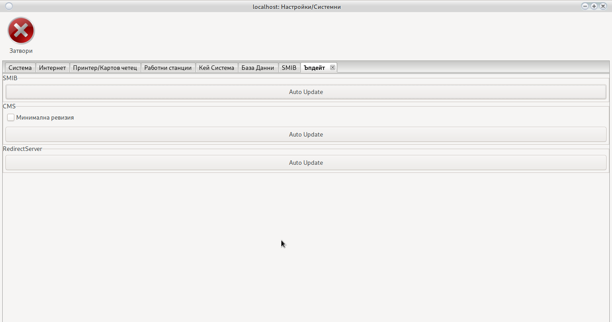

Системни настройки
Настройка на цялата система.
В тези настройки не е включен само джакпот сървър
Част от настройките искат рестарт на програмата, за да влязат в сила.
Част от настройките са индивидуални за всяка програма,
други са общи за цялата система.
Запознайте се в детайли с всички настройки
Настройките касещи само програмата се намират в colibri/colibri.conf
Ако преинсталирате програмата копирайте colibri.conf
След преинсталация го върнете в директорията colibri/
Това ще запази вашите настройки
Не сменяйте пътя или дяла на програмата
При смяна на дял или път регистрирайте POS терминал
Системни
Настройки на системата касаещи начина на работа.

Дата и час
Датата и часът са от изключителна важност за програмата.
В случай на грешна дата и/или час програмата няма да стартира.
Моля уверете се, че датата и часът са верни преди използване на програмата.
В идеалния случай системата сверява датата и часът от интернет.
При зададена опция Използвай RTC програмата ще синхронизира Дата и Час със сървъра.
В случай, че програмата не стартира можете да сверите Дата и Час от опциите на вашата OS.
При малки отклонения използвайте календара и полетата да час и минута. Натиснете Запис
Внимание!
При произведен от нас терминал се убедете, че опцията Използвай RTC е включена.
Debug
Опцията се използва от Програмистите за откриване на грешки. Тя отваря малък бял прозорец с описание на възникнала грешка. При деактивирана опция, грешките се записват във лог файл.
При критични грешки моля изпратете colibri/colibri.log на Grigor Kolev
Не винаги прозореца може да бъде затворен
Излизането на прозорец не означава критична грешка и/или бъг в системата
Препоръчваме деактивиране на опцията в работен режим.
DB Debug
Дебъг на база данни. Използва се от програмистите за поправка на грешки в базата. В случай, че активирате тази опция цялата комуникация с базата ще се запише в colibri/colibri.log
Препоръчваме деактивиране на опцията в работен режим.
Цял Екран
Системата ще се отвори на цял екран. Спирането на системата няма да бъде възможно.
Няма да е възможно отварянето на нито една друга програма в OS
При нужда от спиране използвайте бутона Рестарт
Клавиатура
Ще показва виртуална клавиатура за устройства с тъч скрийн. Не активирайте на компютър с хардуерна клавиатура.
Зачисли удържане
Ако активирате тази опция, всички удържано Бонус Карти и Клиентски бонуси ще бъдат зачислени към касата на крупието.
Понякога крупиетата не могат да се ориентират кои бонуси са Удържани. Моля използвайте бърза справка
Вход веднъж
Указва на системата, че един потребител може да влезе само веднъж. Ако сесията от друга програма не е затворена, вход ще е невъзможен.
Съществуват случаи (Токов удар, неправилно спиране на програмата, грешка в кода) когато даден потребител ще остане със заключена сесия.
Използвайте формата при вход или деактивирайте сесията от потребителски настройки
Печат на ордер
Печата касов ордер за изплащане. В противен случай се пишат на ръка от крупие. Необходим е POS принтер.
Крупие/име на отчет
Вади името на крупието на дневния отчет, за да не е необходимо крупието да си пише името ръчно. Подава се в НАП, използвайте реални имена.
Пари преди отчет
Тази опция изисква крупието да направи подробен опис по купюри на парите с които разполага преди да се отчете. Справката на необходимата събрана сума ще се покаже чак след като изпълни тази стъпка.
Токен НАП
Специален токен за връзка с НАП. Издава се от НАП по молба на фирмата. За повече информация и издаване на такъв токен свържете се с НАП
Език
Системата ще зареди избраната локализация заедно със всички шаблони.
В случай, че искате да добавите нов език и/или да промените шаблон и/или съобщение, погледнете Локализация на системата
Организатор
Използва се за печат на дневен отчет
Адрес на организатор
Използва се за печат на дневен отчет
Игрална зала
Използва се за печат на дневен отчет
Адрес игрална зала
Използва се за печат на дневен отчет
Управител
Използва се за печат на дневен отчет
ЕИК
Използва се за печат на дневен отчет
Мрежа
Настройки на връзки
Отвори Порт
Ако е активна защитната стена на сървъра, тази опция е задължителна, в противен случай връзка с казиното ще бъде невъзможна.
Съветваме използването на защитна стена, тя ограничава всеки достъп до системата не минал през
криптиращите алгоритми. Криптиращия алгоритъм може да бъде уникален за всеки клиент
свържете се с Grigor Kolev
Промяна в криптиращия алгоритъм се заплаща допълнително и не влиза в първоначалната цена.
При активна защитна стена, системата записва всяко IP получило достъп, като на всяко IP може да бъде наложен ban.
Буфер
Не променяйте без консултация с Grigor Kolev
Индивидуален буфер ще увеличи сигурността на цялата система.
Промяна в буфера се заплаща допълнително и не влиза в първоначалната цена.
Таймаут
Времето в което сървъра очаква отговор от останалите елементи на системата (Джакпот сървър, SMIB, Визуализация)
Не правете времето по малко от 10. Може да увеличите в случай на бавен интернет. За повече информация консултирайте се с Grigor Kolev
Redirect (редирект)
Редирект сървъра играе много важа роля в цялата система. Това е мястото където се съдържа цялата информация. Редирект сървъра отговаря и за връзката с всички SMIB контролери и настройката на Джакпот сървъра.
Сървъра вкарва отдалечени програми в мрежата на казиното. Отговаря за изпълнението на всичко свързано с клиентския модул
Зареди
Зарежда настройките на Редирект Сървъра
Запис
Записва настройките в Редирект Сървъра
Loging
Активира сървър за запис на грешки. Сървърът ще вземе всяка грешка от всеки SMIB контролер и ще я запише в базата данни. Погледни
Може да деактивирате loggin сървъра и да пренасочите всички грешки към компютър на Сервиза
Свържете се с Grigor Kolev за tool за четене на грешки на отдалечен компютър.
Часовник
Обикновено сървъра се сверява през интернет, но при липса на такъв използва RTC (real time clock) модул.
Часовников механизъм който ще свери Дата и Час
Сървъра ще синхронизира Дата и Час на цялата система.
Внимание!
Уверете се, че RTC модула е поставен правилно на сървъра
Уверете се, че батерия RC2032 на RTC модула е изправна.
TCP
Използва TCP протокол вместо UDP, който е по подразбиране
Променливо криптиране
Променя динамично криптирането след всяка заявка. Тази функция усложнява криптирането и го вкарва в режим с променящ се ключ и случайно генериран вектор
NRA Test
Тестов сървър към НАП за разработчици. Използва се само от разработчика.
Отключи с OCR
Активира възможност за отключване с четец за лична карта.
SVN
Функция за отдалечен достъп (remote control) на програмата.
Защитна стена
Активира защитната стена на редирект сървъра.
Бан система
Остаряла технология. Разчита на логове и налага бан за 24 часа при 3 пъти въведена грешна парола.
Ще бъде премахната в следващи ревизии.
Моля използвайте Защитна Стена
Няма защита
Деактивиране на всички функции за защита на сървъра.
Внимание!
Не деактивирайте защитата ако не сте сигурни какво правите.
Машините ще подават сигнал при печалба или кешаут на посочения e-mail Погледни
Subject
При подаден сигнал за печалба служи за разпознаване на различните казина
Принтер
Избор на принтер по подразбиране. Системата може да бъде настроена, целия печат да минава през сървъра и да излиза на един принтер. Принтера трябва да е закачен и настроен на редирект сървъра. За повече информация се свържете с Grigor Kolev
POS
Избор на POS (Point of sale) принтер, ако има такъв. Най-често се ползват за фискални бележки, но могат да се ползват и за други цели
Секция RTC
Real Time Clock модул
Внимание!
Уверете се, че RTC модула е поставен правилно на сървъра
Уверете се, че батерия RC2032 на RTC модула е изправна.
Използвай RTC сървър
Указва на системата да синхронизира Дата и Час със сървъра при всяко стартиране.
Препоръчително за POS терминал произведен от нас.
Свери Дата и Час на RTC
Използвайте Календара и полетата Час и Минута за сверяване на RTC Модула.
Внимание!
Уверете се, че RTC модула е поставен правилно на сървъра
Уверете се, че батерия RC2032 на RTC модула е изправна.
Принтери и Четци
Настройки на принтери и четци

Внимание!
Изисква инсталиран wkhtmltopdf
За Window добевете C:\Program Files\wkhtmltopdf\bin в пътя за търсене и рестартирайте компютъра
За Debian или Ubuntu използвайте apt install wkhtmltopdf
При затруднения с инсталирането на wkhtmltopdf свържете се с Grigor Kolev
Директен печат
Ще отпечата директно на избрания принтер, необходимия документ без да отваря PDF четец.
Внимание!
На OS Windows споделете принтерите
Не използвайте в имената за споделяне интервали.
Ако опцията не е избрана, ще отвори PDF документ в избрания от вас PDF четец и можете да направите печат през опциите на четеца.
POS Принтер
Активира POS принтер за печат на талони за томбола.
Внимание!
POS Принтера трябва да е в режим Принтер, няма да работи в режим Сериен порт
Препоръчваме използване на Citizen CT-S2000
Използвайте произведен от нас POS терминал за свързване на POS принтер
Печат на сървър
Определя дали програмата ще отпечатва на локален принтер или на отдалечен принтер закачен на сървъра.
В случай на наличие на много POS терминали в едно казино, свържете принтера на сървъра и изберете опцията. Това ще позволи всички POS терминали да използват един и същ принтер.
Може да използвате споделен принтер или интернет принтер. Свържете с Grigor Kolev
Внимание!
Препоръчваме използване на принтер с драйвери за Linux ARM
Директен печат на POS
Печат на сървър POS
Мънибек на POS
Печата разходни касови ордери на POS принтер.
OCR
Избор на четец за лични карти. Ако изберете първата опция Наличен, по подразбиране ще използва Access OCR, но поддържа и Desco OCR.
Програма за PDF
-
За Linux
Въведете името на вашата любима програма за четене на pdf документи
-
За Windows
Въведете пътя на инсталираната програма за четене на pdf документи
Използвайте десен бутон на мишката върху линка на иконата на предпочитания pdf четец и изберете Proparties

Копирайте текста и го поставете в полето

Рестартирайте програмата.
Принтер по подразбиране
Изберете локален принтер на който да се отпечатват всички документи при Linux.
При Windows въведете име на споделен принтер без интервали. Погледнете Споделяне на принтер
Внимание!
Използвайте при активно опция Директен Печат
Ще зареди всички принтери инсталирани в CUPS
При OS Windows въведете името на споделен принтер което сте задали
POS Принтер
Изберете POS принтер по подразбиране
Трябва да бъде инсталиран в CUPS
При OS Windows принтера трябва да бъде споделен. Погледнете Споделяне на принтер Името на споделения принтер не трябва да съдържа интервали. В полето се въвежда името на споделения принтер.
Размер на хартията на POS Принтер
Системата е настроена за Citizen CT-S2000 с 80 mm широчина и 110 mm дължина на талона.
За различен принтер, поиграйте с цифрите докато се получи правилния размер.
Използвайте бутона Тест POS Принтер за да видите дали печата е наместен спрямо хартията.
Тест POS Принтер
Печата тест на POS принтер
Добави Инфо
Настройва информация която да се печата на POS принтер.
Отваря
Това са първите 3 реда отпечатани в талона.
Моля съобразявайте се с размера на хартията, не е възможно отпечатване на 1000 символа на хартия 80 mm.
Използвайте бутона Тест POS Принтер за да видите дали печата е наместен спрямо хартията.
Секция RFID Четец
Настройка и работа на RFID четец
Всички четци трябва да са в режим Сериен Порт
Използвайте документацията на RFID четеца за да смените режима при нужда.
Активиране на четец
Указва на системата да използва RFID картов четец.
При затруднения се свържете с Grigor Kolev
Порт на RFID четеца
-
Linux
/dev/ttyACMХ или /dev/ttyUSBX
-
За Windows
comX
Заместете X с номера на порта.
Скорост на комуникация
Изберете скорост в която серийния порт работи
Таймаут
Времето в секунди при което четеца ще генерира грешка за липса на поставена карта
Време на сканиране на четеца
Времето е в милисекунди. Четеца ще проверява за карта на всеки 500 милисекунди.
Не всички четци поддържат тази функция
Свържете се с производителя на RFID четеца
Update RFID
Работни Станции
Инсталиране на работни станции.
В случай, че определен компютър не е инсталиран в базата, системата няма да позволи връзка.
Или ако инсталирате програмата на компютъра на Управител 1 той няма да е в състояние да се свърже с Казино 2
В случай на напускане на управител, премахнете компютъра от POS терминалите за да отнемете достъпа.
Инсталирай
Оторизиране на POS Терминал
Ако POS Терминала не е оторизиран за работа в съответното казино, то връзката с базата данни ще бъде невъзможна.
Всеки компютър работещ с информацията на казиното трябва да бъде оторизиран.
Използвайте бутона Инсталирай

Въведете име за разпознаване на компютъра.
Въведете Кода изпратен ви на E-Mail и използвайте бутона Запис
При преинсталация на компютър или промяна в пътя на програмата
системата ще поиска нова регистрация на POS терминал
Премахни
Освен деактивиране на потребител премахнете и POS терминала на
управителите. Проверете и дали управителя е логнат в системата и го изхвърлете.
Ако опцията Вход веднъж не е активирана, рестартирайте сървъра,
това ще затвори всички активни сесии.
Инициализирай
В случай, че забравите имената на POS терминалите използвайте Инициализация
Бутонът ще премахне всички POS терминали освен Вашия
Кей Система
Настройки на Кей Система
Изисква работещ RFID четец
Скачащ ключ
Ще накара кей системата на машините да работят само с картата на крупието което е стартирало смяна в избрания регион
За правилна работа премахнете опцията много ключове от настройките на всеки SMIB контролер.
Промени при отчет
Само за потребители с администраторски права. Може да промени дневният отчет ако е необходимо.
Използвайте Запис за промяна в настройките
Запис на реле 1
Изисква работещ RFID четец
В зависимост от разположението на кабелите ще запише OWNER или ATENDANT
При грешка може да завъртите от настройки на SMIB
Запис на реле 2
Изисква работещ RFID четец
В зависимост от разположението на кабелите ще запише OWNER или ATENDANT
При грешка може да завъртите от настройки на SMIB
Reset
За да възстановите настройките използвайте Reset бутона
База Данни
Система за профилактика и почистване на база данни
За архивиране е необходим pg_dump
За връщане pg_restore
Инсталирайте postgresql
За Linux
apt-get install postgresql
За Windows
Необходимо е да изтеглите и инсталирате POSTGRESQL Database
https://www.postgresql.org/download/
Добавете в пътя за търсене
Архивиране на база данни
Изберете директория за създаване на архив.
Препоръчваме архивиране на отдалечен компютър след всеки дневен отчет.
Възстанови от архив
Изберете архив и върнете информацията в базата.
Ще премахне всичко записано след датата на архива
Почисти База
Премахва цялата информация по стара от една година - 1 ден
Задължително направете архив на базата
Вакумирай База
Ще ускори работата на базата данни.
Няма да повлияе на информацията.
Възможно е да изисква много време.
Ново Индексиране
Ще ускори работата на базата данни.
Няма да повлияе на информацията.
Възможно е да изисква много време.
Почисти SMIB лог
Премахва цялата информация за грешките в SMIB контролерите и лога на отчетите.
SMIB
Настройки на SMIB Контролер
От падащото меню може да заредите настройките на само една машина или да презапишете всички.
Внимание!
В случай на презаписване на всички машини трябва да сте сигурни, че разполагат с еднакъв хардуер
Хардуера трябва да е закачен на еднакви портове
Фиг 1
Фиг 2

Фиг 3
Секция PROC
Секция определяща работещите процеси в SMIB контролера.
Всяка опция отговаря на процес.
Премахването на опцията Джакпот сървър ще блокира отчислението на съответната машина към мистериите.
Премахването на SAS ще спре връзката на SMIB контролера с машината.
Внимавайте със спирането и пускането на процеси
Трябва да знаете кой процес зависи от __SAS__ и кой от __RFID__
Секция SAS
Настройване на SAS протокола
Конфигурация
В 95 % от случаите е достатъчно да изберете ЕГТ
Тази настройка ще работи на почти всички машини с които се срещнете.
Голямо изключение прави фирмата Казино Технологии
Интересно при Казино Технологии, че няма две версии на една машина които да работят по един и същ начин.
Опитали сме да заложим автоматични настройки на всеки вариант на тяхна машина която имаме.
Не поемаме отговорност дали работят и как.
Ако имате машина с различни версии или други производители отказващи да четат SAS протокола
поиграйте си с времената и опциите в тази секция.
Моля ако попаднете на такъв модел, изпратете ни модела и версия на машината и снимка на настройките за да ги добавим в менюто за автоматична настройка.
Свери дата и час
SMIB контролера ще синхронизира Дата и Час на машина със своята при всеки рестарт.
SMIB Контролера се синхронизира с RTC модул
Може да изключите тази опция без последствия за работата на системата
AFT
Указва на SMIB контролера, че AFT е активирано на машината.
Контролера ще използва AFT винаги когато е възможно.
SAS Сигурност
Ако опцията е активна системата ще защитава Legacy бонус
При наливане на бонус без участие на SMIB контролера машината ще бъде заключена.
За отключване Погледни
Провери за игра
Препоръчителна опция. Проверява дали има избрана игра и нейния номер.
Казино Технологии отказват да я напишат в новите версии на машините които са произвели.
Спрете опцията при проблем с бонусирането.
USB2RS
Системата ще използва USB преходник вместо стандартна серийна комуникация.
Забави рил
Част от системата за сигурност
Ако бъде рестартирана машината или SMIB контролера ще забави завъртането на риловете.
Риловете ще се върнат в стандартен режим след 3 минути с кредит над 1 лев
При някой машини ще блокира аутоплей бутона (ще работи като старт)
Забави комуникация
SMIB контролера е 100 пъти по бърз от машините на Казино Технологии с ARM и се налага да го приспим.
0,04 == 40 милисекунди
Използвайте полето за да регулирате
Спри Ауто Плей
Част от системата за сигурност
При сума върната като печалба надвишаваща поле 1 контролера ще забави риловете и/или ще блокира аутоплей бутона за минути от поле 2
При задаване на поле 2 със стойност 0 риловете и/или блокирането на аутоплей бутона ще останат до ръчното им пускане
Номер на машина по SAS
Новите машини на Казино Технологии отказват да кажат номера си по SAS протокол
Въведете го ръчно __Пример: 01, 02, 03, ...___
SAS таймаут
Време в секунди след което серийния порт ще генерира грешка за липсва връзка.
В 95 % от машините 2 секунди е оптимално
При Казино Технологии го вдигнете ако е необходимо.
Секция Jackpot
-
Изплащане на ръка
Мистериите няма да падат в кредита на съответната машина. При Казино Технологии може да се наложи използване на тази опция.
-
Използвай AFT В много редки случаи комуникацията AFT изисква активиране на опцията. Активира се само при необходимост.
-
Заключи при загуба
В случай, че машината не осъществи връзка с джакпот сървъра в 20 последователни опита, то тя ще се заключи.
При повреда в сървъра деактивирайте тази опция за да не блокират всички машини.
При нормална работа е добре опцията да е активна. Тя ще ви уведоми за проблем с комуникацията.
Регулирайте броя на последователните загуби за да имате възможност да рестартирате сървъра без да блокирате цялото казино.
-
Падане при кредит
Ако кредита на машината е под посочената сума в лева, то спечелване на мистерия е невъзможно.
Секция Client
Настройки на клиентски модул
-
Аут под сума
Ако кредита не е над сумата необходима за превъртане не позволява аут. Пример: пада бонус 10 лв и за кешаут се изискват 20 лв. С отметка може да се направят на 20 лв. и да играта да продължи дори да падне на 10 лв. Без тази отметка аут или губи.
-
Заключи бил без клиент
Заключва бил ако няма клиентска карта
-
Заключи без клиент
Няма да позволи игра на машината без поставяне на клиентска карта
-
Зареди видео
Избор дали да се показва рекламен клип на машините
-
Таймаут
Време след което клиента ще бъде изтрит при премахване на карта
-
Кредит
След като кредита падне под посочената сума, ще се отвори бонус.
При неактивно AFT за падане на бонус ще изисква 1-2 завъртания
Съобразете се с коефициента на машината.
-
Номер видео
Избор на кой точно подред рекламен видеоклип да се показва.
-
Скин
Избор на скин / тема на SMIB контролера. Темите са две синя и жълта.
Секция Bonus
Управлява бонус картите
-
Удържане над
Сумата над която ще бъде удържан бонус при кешаут.
Погледнете:
Удържане на бонус карти
Удържане на клиентски бонус
Настройки/Системни -
Изтрий Буфер
Времето в секунди през което няма да може да бъде сложен следващ бонус
Секция RFID
Настройва RFID четеца на SMIB контролера
-
RC255
Избира се в случай че контролера е тип RC255
Бутон Запиши Четец променя времето на сканиране
Не се поддържа от всички RFID четци. Моля свържете се с производителя на четеца за допълнителна информация.
Секция SendMail
SMIB контролера ще уведомява собственика за печалба или кешаут над посочената сума
Секция LogServer
-
Изпращай към сървър
Всички грешки генерирани от SMIB контролера ще се изпращат към сървър
-
IP на сървър
При активиран logging сървър използвайте 192.168.1.6
Ако искате да изпращате грешки към отдалечен компютър въведете IP на сервиз
-
Ново
Изберете ниво на грешките които да се записват
Секция KeySystem
Управление на Кей Системата
-
Много ключове
По подразбиране системата работи само с един ключ в един момент от време.
Активиране на опцията ще позволи до 5 ключа записани едновременно
При превишаване на лимита от 5 първия записан ще бъде премахнат.
Моля проверете Кей Система и Потребители
Преди да вземете решение за начина на работа. -
Опция AFT
Ще активира кешлес за клиентите
-
Тест Реле
Ще изпробва дали релето е закачено правилно и последователността на кабелите за OWNER и ATENDANT
-
Канали на реле
При грешно поставени кабели може бързо да размените местата им с промяна на цифрите
1 става 2 и обратно
Не съветваме такава промяна. Тя ще ви обърка ако програмирате Кей Система на всички машини
-
Таймаут
Време за отваряне на реле. Или колко време релето да паузира машината след премахване на ключ за слагане на кредит
Секция System
Активиран режим на наблюдение на системата. Не е необходимо, използвайте само про проблеми с машината, суичовете или SMIB контролера.
-
Проверка процеси
Проверява дали всички процеси работя. При нужда ги рестартира
-
Проверка нет
Проверява дали има връзка със Редирект Сървъра и
Джакпот сървъра и прави опит за поправка на Lan порта -
Проверка на система
Проверява захранването на машината и температурата в сандъка. При висока температура ще изключи последователно ядрата на CPU за да защити SMIB контролера. Ще уведоми за проблем.
-
Интервал на проверка в секунди
Време през което да се извършва проверка на системата
-
Критична Температура
Температурата при която ядрата на CPU за започнат да блокират
-
Лог Файл
SMIB контролера ще записва всички грешки и в собствен лог файл, не само в logging Сървър
Секция Control
Бърз контрол на SMIB контролера
-
Покажи Лог
Показва грешките записани в SMIB контролера
-
Включи деноминация
Изберете игра на машината за да включите, изключена деноминация.
При машини на Казино Технологии не е възможно.
-
Спри деноминация
Деактивира възможността да се играе на определена деноминация. Изберете игра и желана деноминация за деактивиране и натиснете бутона.
Няма да бъде възможна игра на съответната деноминация ако не бъде активирана отново.
При машини на Казино Технологии не е възможно спиране на деноминация. Цялата игра ще изчезне от екрана ако машината е стара версия (пускане е възможно след нулиране на SMIB контролер и рестарт на машина).
В случай на нова машина на Казино Технологии функцията не работи. -
Нулирай
Нулира SMIB контролера. Всички карти за кей система и бонус карти ще бъдат премахнати. Всички настройки на SMIB контролера ще бъдат изтрити. IP на SMIB контролера няма да бъде променено
-
Изключи Джакпот
Избраната игра няма да отчислява на Джакпот сървъра
Пример: Ролетка
-
Включи Джакпот
Ако дадена игра е изключена от Джакпот сървъра можете да я включите отново
-
Автоъпдейт
Ще ъпдейтва само този SMIB контролер
-
Рестарт
Секция LogConfig
Променя нивата на запис на грешки на всеки процес.
DEBUG и INFO се използва от програмистите
WARNING е в случай, че имате съмнения за нередност
ERROR ще запиши само грешки
CRITICAL Грешки които са критични за системата (Изгорял RFID четец)
Ако зададете WARNING ще бъдат запазен всички съобщение с по-висок статус като ERROR и CRITICAL
Внимавайте с избора на ниво, може да препълни паметта на SMIB контролера и/или Базата данни на logging сървъра
Ъпдейт
Ъпдейтване на системата

SMIB
Ще Ъпдейтва всички SMIB контролери до избраната ревизия
Оставете празно в случай, че ъпдейтвате до последна възможна ревизия
CMS
Ъпдейтва програмата за отчитане
Опцията Минимална ревизия ще принуди всички програми за отчет свързани към казиното да се изравнят с тази ревизия
При Windows OS се стартира допълнителна програма за ъпдейт. От прозореца за стартиране като администратор изберете Yes и изчакайте. След като командния промпт изпише Press any key to close! Натиснете произволен бутон и стартирайте програмата отново.
Внимание!
Проверете ревизията.
ТукВнимание!
Ако OS ви каже че програмата не отговаря
Изберете: Изчакай
RedirectServer
Ще извърши ъпдейт на Редирект Сървъра
Моля свържете се с Grigor Kolev преди ъпдейт.
При промяна на базата данни е нужна миграция и е възможно Редирект Сървъра да не стартира след ъпдейт.